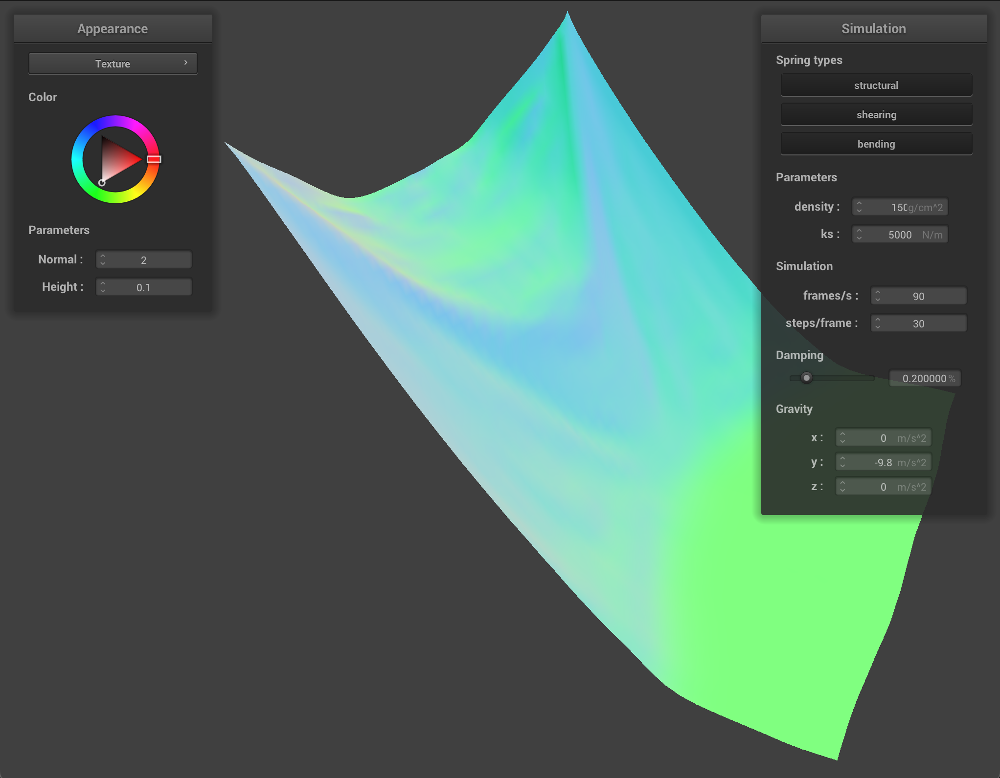
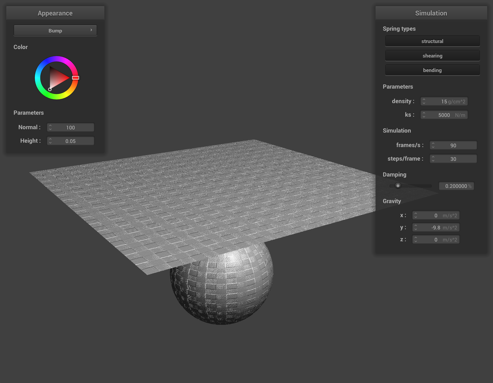

Overview
In this project, I implemented a simulation of cloth using a mesh grid made of point masses and springs. To simulate realistic cloth, I computed the total forces acting on the points that made the mesh to determine how the mesh would behave at each timestep. I accounted for collisions the cloth could make with other objects or itself by fixing the positions of point masses that clipped through objects that they should not have. Finally, I implemented a GLSL shader program that uses vertex shaders and fragment shaders to create the effects of Blinn-Phong shadows and textured material.
Part 1: Masses and Springs

Cloth Wireframe Structure |
Wireframe w/o Shearing |
|
Wireframe w/ Ony Shearing |
Wireframe w/ All Constraints |
Part 2: Simulation via Numerical Integration

|
When comparing between low and high ks values, I noticed that the cloth folds over itself with high ks values but appears to fall flat at rest when using a low ks value. I think this phenomenon takes place for a low ks value because the force between each point mass is much weaker which makes the cloth appear to be stretchy. On the other hand with a high ks value, the cloth appears to try to hold onto its rectangular shape even when falling.
|  |
For density values, I noticed a similar but opposite effect from the comparison on ks values. For a high density, the cloth appears to be very loose and stretchy and will still fold over itself at rest. The cloth also droops further down in the middle when at rest which shows its flexibility. For a low density, I see the rectangular shape again that the cloth refuses to let go of. The cloth appears rigid, inflexible, and potentially a little heavier.
For a low damping percentage, the cloth falls much faster and swings back and forth for a while even after falling before eventually coming to rest. The cloth has a lot of interesting folds which just shows how rapidly the cloth falls. Meanwhile with a high damping percentage, the cloth falls extremely slowly and doesn’t appear to fold very much when falling because of how slow the fall is. The cloth then falls into its flat vertical position at rest without swinging at all. Intuitively, this makes sense because the damping term determines how resistant the cloth’s point masses are to any forces.
|
Cloth w/ 4 Pinned Corners |
Part 3: Handling Collisions with Other Objects
|
Cloth on Sphere |
|
|
ks = 500 N/m |
ks = 5,000 N/m |
|
ks = 50,000 N/m |
For a smaller ks value, the cloth appears to be much bendable and stretchier which explains why the cloth appears to droop much more. For a higher ks value, the cloth is more stiff and doesn’t bend as easily. This makes sense because the total forces acting on the cloth’s point masses are weaker with a lower ks value. With less force, point masses will move more with each time step because of the positive correlation between force and acceleration. It’s also worth noting that the cloth eventually slid off for all ks values.
|
Cloth on Plane |
Part 4: Handling Self-Collisions

Initial Self-Collision |
More Self-Collisions |
|
Final Resting State |

|
The cloth with a lower density folds on itself but not nearly as much as the cloth with high density. At a lower density, the cloth holds onto its horizontal shape and does not appear to fold over itself for any point masses on the same horizontal level. In its final resting state, the cloth also appears to undo the earlier folds and flatten out as much as it can. For a higher density cloth, I can immediately observe that the cloth folds much more because of the wide and abrupt variations in color across the cloth. In the resting state, there are a lot of folds that still remain though difficult to see because they are being covered by another fold.
The cloth at low and high ks values continues to resemble the cloth at high and low density values. The low ks-value cloth folds a lot and appears to be stretchier and less resistant to force in both the falling and resting states. Meanwhile, the high ks-value cloth remains somewhat stiff and folds less. This is indicative of the stronger forces acting between point masses that hold them together. In the resting state, we again see the cloth undoes some of the folds seen while falling.
Part 5: Shaders
Shaders are programs that take in some parameters of some mesh to perform operations that change the shading, lighting, and color of the mesh pixel by pixel. Shaders are of two types: vertex shaders and fragment shaders. Vertex shaders take in several inputs for a single vertex and output properties of the vertex for further operations. The vertex shader is responsible for a vertex’s position and normal which can affect the physical shape of the mesh to create material effects if necessary. The output of a vertex shader is inputted to the corresponding fragment shader. In the fragment shader, the vertices are processed to output a single vec4 which determines the color of a pixel. Lightness/darkness of a pixel is chosen here using diffuse or Blinn-Phong shading. Physical texture effects can also be created by using bump mapping. Visual texture mapping can be used to map an image or material onto the mesh.
Blinn-Phong shading works by combining ambient lighting, specular reflection, and diffuse shading. The light for a single pixel is calculated using all three techniques in the formula for Blinn-Phong shading with properties of the given vertex.
|
Only Ambient Light |
Only Diffuse Light |
|
Only Specular Light |
Blinn-Phong Shading |
|
Custom Texture Mapping |
|

Bump Mapping |
Displacement Mapping |
Bump and displacement mapping both map textures onto the mesh and sphere, but displacement mapping further adds texture by distorting the normals of every vertex. The effects of displacement mapping are hard to notice for the sphere, but displacement mapping does give a more realistic appearance. Smooth surfaces in reality are rarely actually smooth. Meanwhile, bump mapping is easier to compute.
|
16 x 16 resolution |
128 x 128 resolution |
The difference in the coarseness of the sphere is very hard to notice for bump mapping. The surface of the sphere appears roughly the same in both images though the sphere’s surface is slightly more blurry in the 16 by 16 resolution. Logically, the sphere is more coarse in the higher resolution image.
|
16 x 16 resolution |
128 x 128 resolution |
For displacement mapping, it is easier to see that the sphere’s surface is rougher at a higher resolution. It’s easy to see that the sphere has ridges and is not smooth. In the lower resolution sphere, the roughness of the sphere is smoothed out as a tradeoff for computational efficiency.